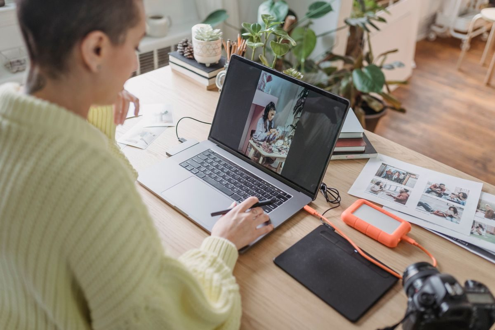
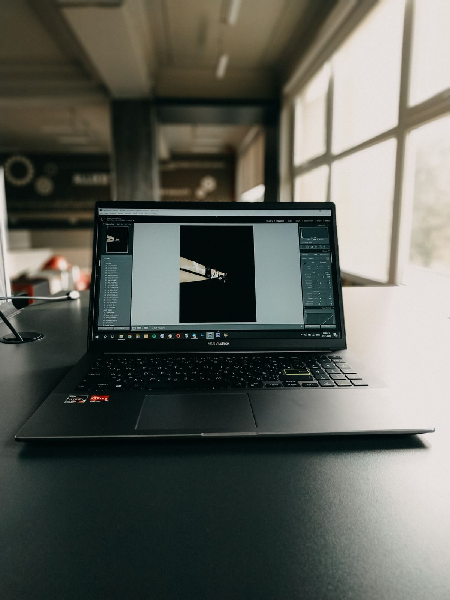
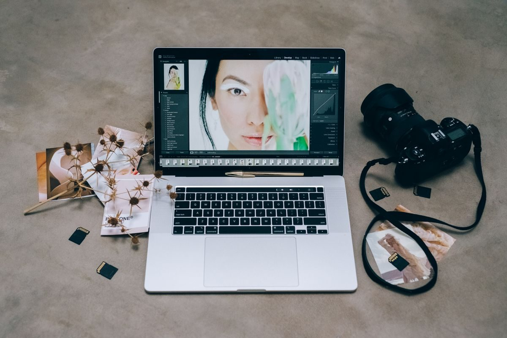

Kamu perlu mengedit foto, tapi tidak punya Photoshop dan tidak mau install aplikasi berat. Mungkin kamu cuma perlu memotong foto, menghapus latarnya, atau membuka berkas PSD kiriman teman. Untuk kebutuhan seperti itu, ada satu situs yang patut kamu simpan di bookmark: Photopea, alternatif gratis Photoshop yang jalan langsung di browser. Kamu tidak perlu mengunduh apa pun, dan kamu tidak wajib membuat akun untuk mulai mengedit. Artikel ini menjelaskan apa itu Photopea, cara memakainya, apa saja yang bisa kamu buat, dan batasannya. Semua mengikuti keterangan resmi situs Photopea per Oktober 2026.
Alasan kenapa Photopea layak dicoba ada di satu kalimat: tampilannya dibuat mirip Photoshop, jadi alat-alatnya terasa familiar. Panel alat ada di kiri, panel layer ada di kanan, dan menu ada di atas. Kalau kamu pernah membuka Photoshop walau cuma sekali, kamu tidak akan terlalu bingung mencari tombol crop, brush, atau teks.

Apa itu Photopea dan kenapa gratis
Photopea adalah editor foto daring yang berjalan penuh di browser, di Chrome, Firefox, Edge, atau browser lain yang kamu pakai sehari-hari. Karena ia berjalan di browser, kamu bisa membukanya di laptop Windows, Mac, atau Linux selama browsernya bisa dibuka. Situs resminya menegaskan tidak ada unduhan dan tidak ada unggahan: Photopea berjalan di perangkatmu sendiri memakai CPU dan GPU perangkatmu, dan berkasmu tidak pernah meninggalkan perangkatmu.
Soal gratis, begini duduknya. Photopea bisa dipakai gratis, dan situs resminya menulis bahwa kamu bisa menikmati semua fitur premium tanpa mengeluarkan uang. Versi gratisnya menampilkan iklan, dan ada opsi berbayar untuk menghilangkan iklan itu. Jadi kalau kamu melihat iklan di sisi editor, itu memang bagian dari versi gratisnya, bukan tanda situsnya palsu. Kamu tetap bisa memakai alat intinya tanpa membayar dan tanpa daftar akun, sesuai yang ditulis PCWorld pada September 2026.
Dari sisi format, Photopea cukup lentur. Situs resminya menyatakan dukungan penuh untuk format PSD, baik membuka maupun menyimpan, dan PSD adalah format utama Photopea. Selain itu ia bisa membuka PNG, JPG, GIF, WEBP, SVG, PDF, AI, dan banyak format lain, termasuk berkas RAW dari kamera seperti DNG, CR2, dan NEF. Kalau ada teman yang mengirim berkas PSD padahal kamu tidak punya Photoshop, kamu masih bisa membukanya dan mengubahnya.
Cara pakai Photopea langkah demi langkah
Cara memulainya lebih singkat daripada install aplikasi:
- Buka browser, lalu kunjungi https://www.photopea.com. Tunggu sampai editornya selesai dimuat. Tidak ada install dan tidak ada formulir daftar yang wajib diisi.
- Klik menu File, lalu pilih Open untuk membuka foto dari perangkatmu. Kamu juga bisa menarik dan meletakkan berkas langsung ke jendela editor. Kalau mau mulai dari nol, pilih File lalu New Project dan atur ukuran kanvasnya.
- Kenali tiga area utama: alat di panel kiri, kanvas di tengah tempat fotomu tampil, dan panel layer di kanan yang menunjukkan susunan lapisan gambarmu. Bekerja dengan layer membuat setiap perubahan bisa diubah terpisah tanpa merusak foto aslinya.
- Lakukan edit dasarmu. Potong foto dengan alat Crop, ubah ukurannya lewat menu Image, atur terang dan warnanya lewat menu Filter dan Adjustment, atau tambahkan teks dengan alat Type. Kalau salah langkah, tekan Ctrl dan Z di Windows atau Command dan Z di Mac.
- Kalau sudah puas, simpan hasilnya lewat menu File lalu Export As. Pilih JPG untuk dibagikan di media sosial, atau PNG kalau kamu butuh latar transparan. Kalau mau lanjut mengedit dengan layer tetap utuh, simpan sebagai PSD.
Satu kebiasaan yang wajib kamu pegang: simpan dulu sebelum menutup tab browser. Karena berkasmu diproses lokal dan tidak diunggah ke server, tidak ada salinan cadangan otomatis. Kalau tab tertutup sebelum kamu mengekspor, pekerjaanmu bisa hilang.

Apa saja yang bisa kamu buat dengan Photopea
Jangan salah kira editor gratis di browser cuma bisa memotong foto. Situs resmi Photopea mencantumkan Layers, Masks, Layer Styles, Smart Objects, Adjustment Layers, Channels, dan Paths, plus Levels, Curves, Gaussian Blur, Liquify, dan Puppet Warp. Dalam bahasa sehari-hari, itu artinya kamu bisa melakukan hal-hal berikut. Pertama, retouch foto: membersihkan noda, mengatur cahaya, dan memperbaiki warna foto liburan atau foto produk jualanmu. Kedua, menghapus latar foto dengan satu klik lewat fitur AI hapus latarnya, lalu menggantinya dengan warna atau foto lain. Ketiga, membuat desain sederhana seperti poster, thumbnail video, dan konten feed, lengkap dengan teks dan bentuk vektor.
Photopea juga berguna untuk urusan berkas yang sering bikin repot. Misalnya kamu diminta panitia mengubah ukuran pas foto, atau kamu menerima berkas PSD dari desainer tapi tidak bisa membukanya. Buka berkas itu di Photopea, ubah teks atau gambarnya, lalu ekspor ulang. Untuk foto dari kamera, dukungan RAW-nya membantumu mengatur Exposure, Color Balance, dan Contrast sebelum fotonya diekspor jadi JPG.

Yang perlu kamu tahu sebelum pakai
Photopea bukan tanpa batas, dan lebih baik kamu tahu dari awal. Pertama, karena ia jalan di browser dan memproses semuanya di perangkatmu, proyek yang sangat besar atau berlapis banyak bisa terasa lambat, apalagi di laptop yang spesifikasinya pas-pasan. Untuk edit cepat, ia terasa ringan, tapi untuk proyek berat, aplikasi desktop tetap lebih nyaman. Kedua, kamu butuh koneksi internet untuk membuka situsnya, karena tidak ada versi luringnya. Kalau kamu sering bekerja tanpa internet dan butuh editor desktop gratis, GIMP bisa jadi pilihan lain: gratis dan sumber terbuka untuk Windows, macOS, dan Linux.
Ketiga, jangan berharap semua hal berjalan persis seperti Photoshop. Beberapa fitur lanjutan dan plugin Photoshop mungkin tidak ada atau berperilaku sedikit berbeda di Photopea. Untuk pemakaian sehari-hari itu jarang terasa. Keempat, perhatikan iklan di versi gratis. Jangan pernah mengklik iklan yang mengaku sebagai tombol unduh atau tombol simpan. Tombol yang benar selalu ada di menu File di dalam editor, bukan di spanduk iklan.
Intinya
Photopea adalah alternatif gratis Photoshop yang jalan langsung di browser tanpa install dan tanpa daftar akun, dengan dukungan penuh PSD, layer, mask, dan alat retouch yang serius. Berkasmu diproses lokal di perangkatmu, jadi fotomu tidak diunggah ke server. Versi gratisnya beriklan dan proyek yang sangat besar bisa terasa lambat, tapi untuk memotong foto, memperbaiki warna, menghapus latar, membuat poster sederhana, dan membuka berkas PSD, ia sudah bisa diandalkan. Buka photopea.com, coba satu foto hari ini, dan simpan situsnya untuk saat kamu butuh edit foto dadakan. Semua informasi di artikel ini mengikuti situs resmi Photopea dan ulasan PCWorld per Oktober 2026.
← Kembali ke Other